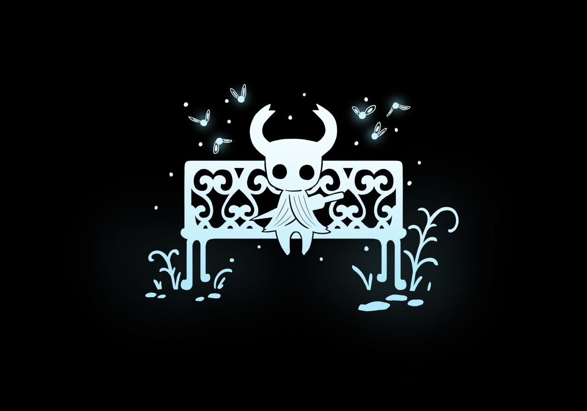

Click Anywhere
How It Works
This timer works in cycles (masks) of 4 intervals (shards).
Each shard takes 25 minutes of focused work to obtain.

Once a shard is obtained, you get a 5-minute break.

Once 4 shards are obtained, a mask is completed, and you get a 30-minute break.
=
 Complete as many masks as you need!
Complete as many masks as you need!